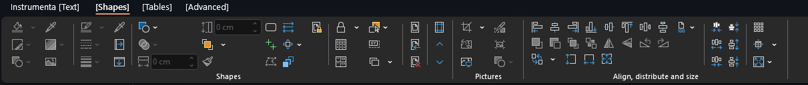
Instrumenta
A free and open-source consulting-style PowerPoint toolbar — the alignment, formatting, and slide-craft shortcuts that paid add-ins charge for, given away. The flagship: years of polish and the widest reach of anything here.
Open-source tools — a consulting-grade PowerPoint toolbar, a Frisian spell checker for Word, Android apps that generate themselves, a launcher you can talk to, a private bridge between your Android phone and your Mac, clean-room drivers that revive dead hardware, family games you can play without internet, and a sheep that walks across your Mac desktop.

A free and open-source consulting-style PowerPoint toolbar — the alignment, formatting, and slide-craft shortcuts that paid add-ins charge for, given away. The flagship: years of polish and the widest reach of anything here.
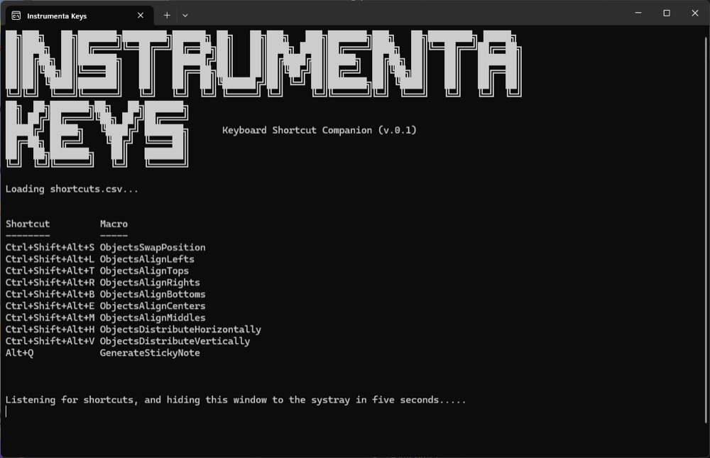
A keyboard-shortcut companion for Instrumenta — keeps the toolbar's commands one keystroke away so the slide work stays in flow.
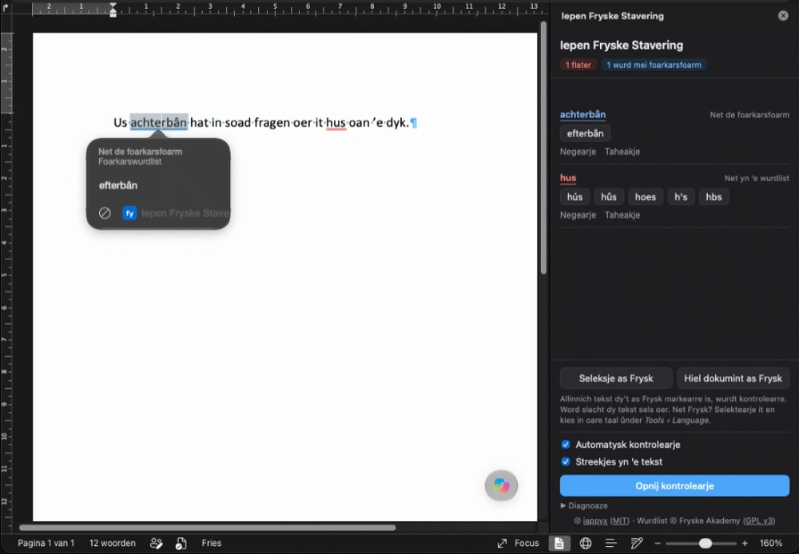
Frisian spell checking for Microsoft Word, including Word for Mac, which has none of its own. Red and blue squiggles with suggestions, based on the official word list (Foarkarswurdlist), including its preferred forms. Mark text as Frisian and Word leaves it alone, while Dutch and English stay with Word's own checker. Everything runs inside Word on your own device; your text never leaves it.
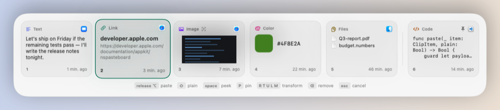
⌘Tab, but for your clipboard. Hold ⌥, tap V, release to paste — your last 10 clips in a frosted strip you flick through with one hand, without leaving the keyboard or looking away. The cards know what they hold: code, links, colors, images, files. Images are read with OCR in the background, text can be reflowed or reformatted on its way out, and a screenshot can be cropped right in the preview — with the window border found and trimmed for you. Password-manager copies, and anything shaped like a key or a card number, never touch the disk and vanish after a minute.
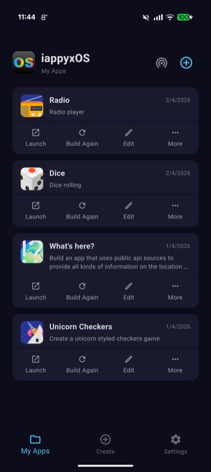
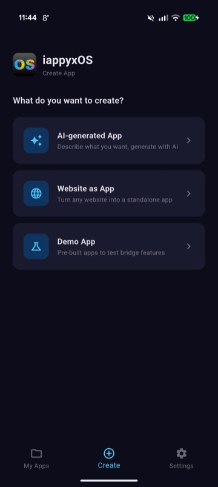
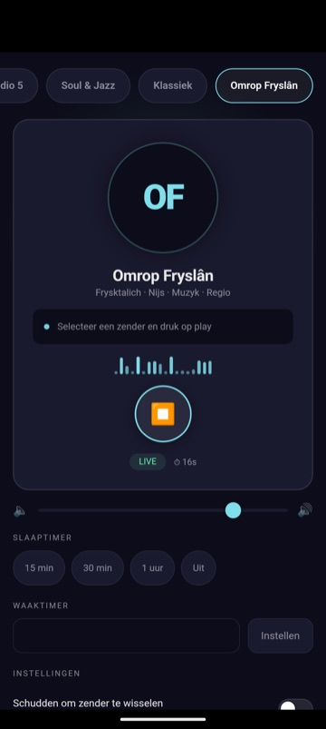
Generate real installed Android APKs on your phone from a plain-language description. Describe an app to your favorite AI, and iappyxOS builds, signs, and installs it on-device — no server, no app store, no code. 38 native bridges give generated apps real hardware access.
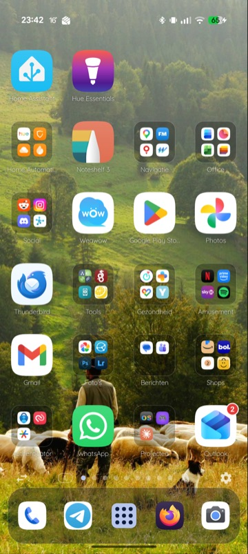
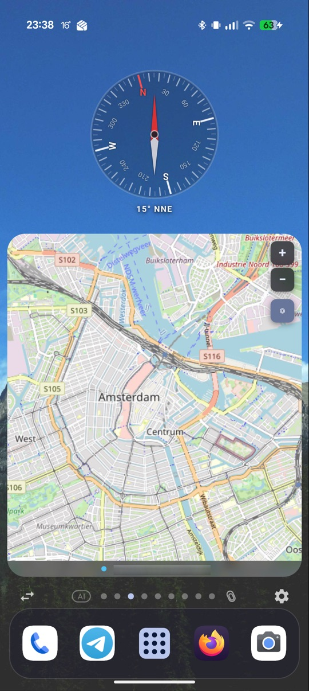
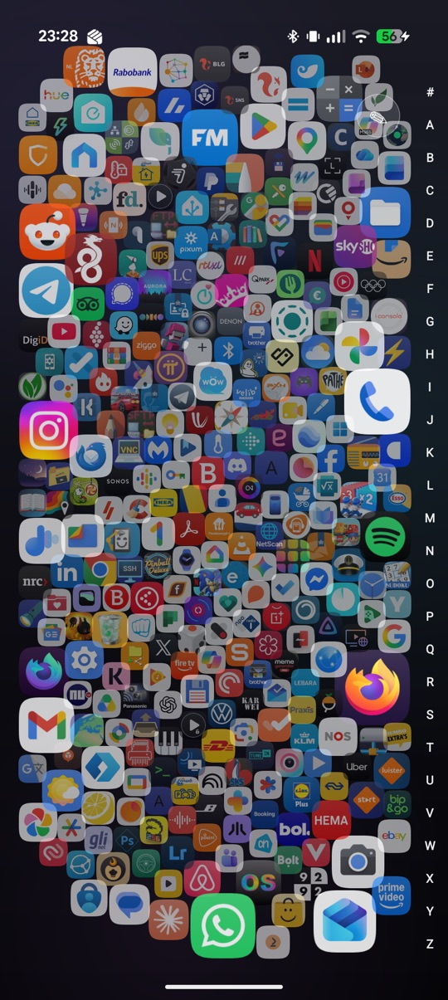
A programmable Android home screen. It's a full launcher — icons, folders, dock, app drawer, universal search, profiles — that also lets you talk to it. Describe a widget or live wallpaper ("hourly weather as colored bars", "a battery-reactive lava lamp") and it generates a sandboxed HTML/JS surface that runs on-device.
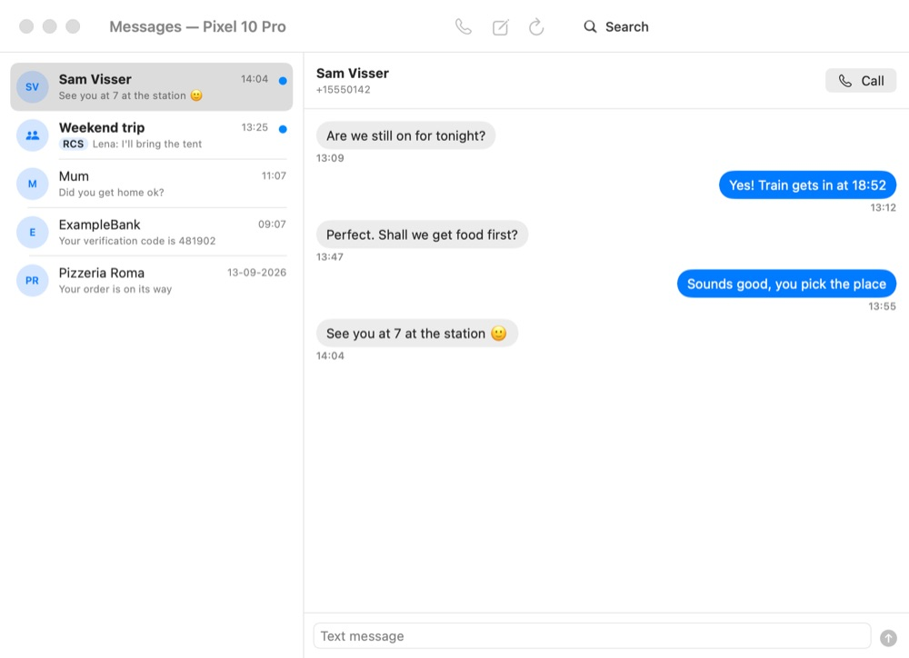
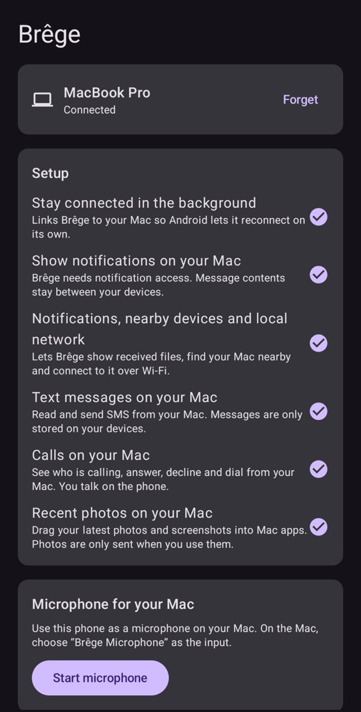
Your Android phone and your Mac, together. Messages and calls, notifications with reply, a shared clipboard, files both ways, phone folders in Finder, the phone's screen and apps in Mac windows, and the phone as camera and microphone — directly over your own network. No account, no cloud: every connection is end-to-end encrypted, and Brêge stays silent on networks you haven't chosen. A Mac menu bar app and an Android app on a shared Rust core.
Bringing abandoned hardware back to life with clean-room drivers, reverse-engineered with AI. First up: the Canon CanoScan 8000F flatbed scanner, running with zero Canon software — a pure-Python reference driver on Apple Silicon, a native driverless macOS scanner (an eSCL / AirScan bridge, so it appears right in Image Capture), a C SANE backend, and an Android USB-OTG port. All recovered from the vendor firmware — no Windows, no emulator.
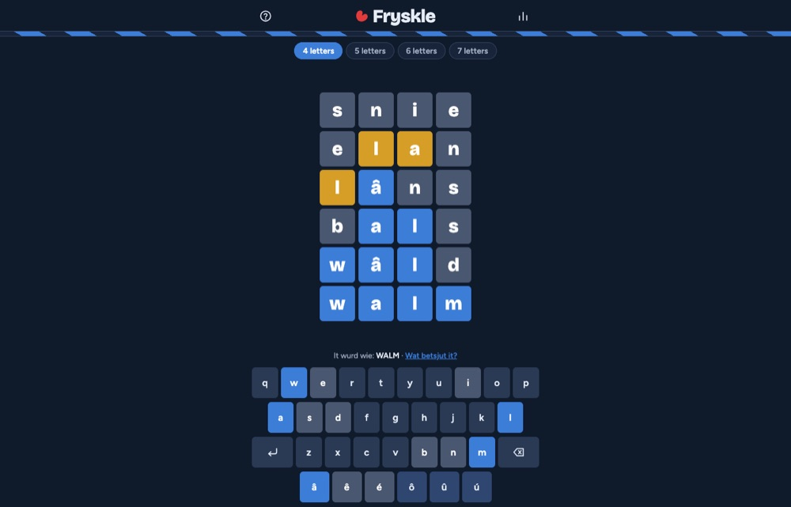
A daily Frisian word game: guess the word of the day in six tries, with words of 4, 5, 6 or 7 letters from the official word list (Foarkarswurdlist). Accents are forgiven, a free daily hint and a word finder help when you're stuck, and after the game a link shows what the word means. Runs entirely in the browser; no account, no tracking.
29 family games to play together — no internet needed. In the car, on the camp site or on a plane in flight mode, phones and tablets connect straight to each other over Bluetooth, WiFi Direct or a phone's hotspot. Board, card, dice, word, drawing and action games for up to four players, or solo against the computer — and friends without the app join from their phone's browser by scanning a QR code. In Frisian, Dutch and English; no account, nothing goes online.
The eSheep is back, on your Mac. A native port of Adriano Petrucci's desktopPet: a little sheep walks along the bottom of your screen, climbs onto your windows, rides along when you drag them, and can be picked up and tossed. It plays the same pets as the Windows version and downloads the community pets straight from the original project. Lives in the menu bar.
A browsable gallery of apps built with iappyxOS — radio players, network tools, games, a road-trip companion — loadable straight into the editor on-device, or submitted by the community via PR.
Widgets, programmable wallpapers, page transitions, icon filters, and plugins for iappyxOS Launcher — 78 entries you can import directly from inside the launcher.